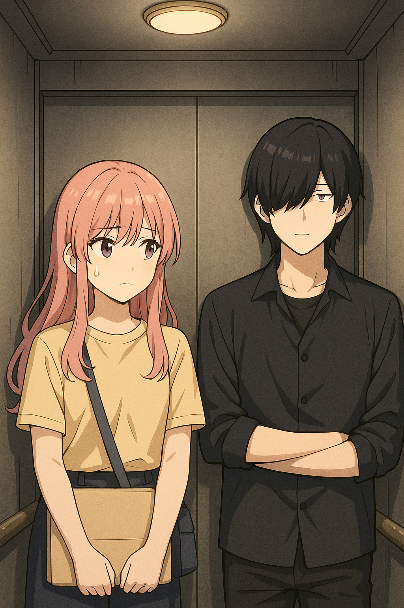

01｜太好了，公司和家在一栋楼！
肖笑笑刚把最后一个纸箱踢到角落，整个人就摊在客厅的木地板上。
窗外树影斑驳，一只小鸟停在树枝上，抖了抖毛，又飞到另一根枝桠。笑笑望着它，发出深深一声感慨：
“终于……不是合租了。”
毕业三年，市区老破小住了三年。隔音像纸片，热水忽冷忽热，但是距离外派的公司近，坐公交10分钟就能上班。她摸了摸地板，干净、平整、甚至还有阳光。
“有房一族，真的不是人过的生活，开发区大海边，好虽好，可是明天要坐地铁一小时去上班，又要早起1小时……但至少现在我能趴着看树。”
她正准备拿出泡面奖励自己“乔迁成功”，手机响了。
“你好，肖笑笑，请明早前往滨海科技集团总部报到。您被外派到 IT 运维部门，从明天开始正式上岗。”
她愣住三秒，然后从地板上跳起来：“啊？总部？滨海集团总部？！”
打开邮件一看，地址赫然写着：滨海科技集团大厦，IT服务部，666层。
下一秒，她像发现彩蛋一样扑回地板上——
“太幸运了吧？这不就在我家楼上？！上下班不用出门，电梯一按，直达天堂！”
02｜没有电梯权限
原来，肖笑笑抽中的是集团公司3层裙楼，公司就在隔壁666层主楼！
第二天早上，肖笑笑精神抖擞地冲到主楼大堂，拿到了印有自己名字的“临时外包通行证”，闪亮亮但写着“访客”。她自信地穿过旋转门，一路朝电梯方向走去。
她抬头一看——66台高速电梯并排排开，每部电梯门口都排着队，像66条发丝般蜿蜒，远处还有一台【666层专用】直达电梯，灯光打得比化妆镜还亮。
笑笑欣喜若狂地奔向那台神圣的电梯，准备刷卡登顶——
她小心翼翼地问电梯前的引导员：“不好意思，我是今天新来的 IT 运维，是外派的，请问能用这台电梯吗？”
引导员抬眼、看了看她的牌，再低头继续查看ipad：“您可以使用楼梯，或者尝试货梯。”
笑笑一愣，脑中浮现出666层的高度，仿佛一条登天梯。正当她准备再争取一下时，眼前电梯门开了，还有空位。
她正要踏进去，三位穿着高跟鞋、妆容如时尚杂志封面的正职女同事站在电梯里一字排开，齐刷刷挡在她面前，空气骤然冷静。
“你不是正职吧？请刷卡验证权限！”
刷卡失败，门不动。
03｜货梯...
她被指引绕过正门，穿过物流通道，来到货梯口。灯闪、墙灰、没人。气氛安静得有些诡异，肖笑笑仰望货梯，只有一个三角形的灯，并没有楼层显示，什么时候能到呢？
正想着，货梯门打开，一名神秘男同事正靠在货梯后墙上，刘海盖住眼，只露一只冷静的眼睛。他不说话，连呼吸声都和货梯一样低调。
肖笑笑：“我是外包运维……你也没有权限？”
神秘男：“我不喜欢排队等电梯。”
肖笑笑踏入货梯，货梯门缓慢关闭，沉默中气氛诡异地和谐。
就这样，开始了“电梯不通、货梯不沟通”的第一天。
